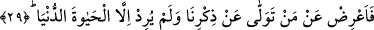

“azap” anlamına geldiğini ve mânâ takdirinin de: “Muhakkak ki onların zanları onları
azaptan kurtaramayacaktır” şeklinde olduğunu belirtmişlerdir. Ancak bu yüce âyetin hak
kavramı ile ilgili verdiği mânâ şudur: Sâlik ve taliblerin süflî menzilleri kat’ ve ulvî
makamlara terakki etme suretiyle ayn-ı cem’e ve oradan da tevhîd denizine ulaşıp gark
olmaya nâil oluncaya kadar seyr ilallahda sa’y ve gayret etmelerini teşvik etmektir.
Tevhîd denizinde Hakk’ın kendisini müşâhedeye dâvet edip esmâ-ı ilâhiyyeye nisbet
olunan kesret zulmetini ortadan kaldıran zât-ı hakikat vahdetinin nuruyla mücerred olan
mânâları anlamaya tahrik etmektir. Ayrıca şunu da belirtelim ki insanlar noksanlık
bulunmayan Hakk sahasında bulunmuş olsalar da huzur-ı ilahiyyeyi müşâhede de
birbirlerinden farklı olurlar. Çünkü onlar kendilerinde bulunan hakikat ile O’nu
müşâhede ederler. Şâyet zâtın kendisini müşâhede etmiş olsalar fazilette de eşit olurlar.
Büyüklerden bâzıları şöyle demiştir: “Hayalî keşf erbabının hatâları isâbetlerinden
daha çoktur. Çünkü hayal geniştir. O hayalde ortaya çıkan şey yorumlara çekilebilir. Bu
nedenle de Hakk’ın müşâhede edilmesi husûsundaki yolculuk ancak hayalin ötesinde
ilimle yapılanla gayesine ulaşır. Hayalin bir hakikatı ve zâtı bulunmaması, bilakis onun
iki hakikat olan mücerred mânâlar ve hislerle idrak edilen mânâlar arasında bir ara
konumda bulunması; zâtında bir hakikata sâhip bulunmayışı çoğu defa hata yapmaya
sürükler. Rasûlullah (s.a.)’ın keşf-i hayali ve bu keşfin savab ve hataya meyyal oluşu ile
ilgili işâret-i şerifesine dikkat et! Cebrâîl (a.s.) Aişe (r.anha) suretiyle bir ipek böceği
olarak Nebî (a.s.)’ye gelip de: “Bu gelen senin zevcendir” dediği zaman Rasûlullah
(s.a.) “Eğer bu gördüğüm, Allah Teâlâ’nın indindense bunu îfâ edebilir” buyurarak
hislerle idrak edilmesiyle alışık olduğu vahiy türünden veya ilmi gerektiren mücerred
mânâlar tarîkiyle kendisine ulaşan ilhamlardan farklı olarak kendisine gelen bu
görüntüyü sadece indellah şartına bağlayarak tasdik etmiştir. Eğer Rasûlullah (s.a.)’da
keşf ve hayali bulunmasaydı, hayalinde tasvir edilen bu şeyin hakikatının da huzura
gelmiş olabilmesini iktiza eden ihtimale dayalı tereddüdlü bir cevab vermesi mümkün
olmayacak, kat’i bir cevap verecekti.
Yakîn denizinden susuz cânına su ver,
Artık şüphe serâbında kurumuş dudakla daha fazla oturma.
29. Onun için sen bizi anmaktan yüz çeviren ve dünya hayatından başka bir şey
istemeyen kimselere yüz verme.
“Onun için sen bizi anmaktan yüz çeviren kimseden yüz çevir.” Yâni ey Muhammed
(s.a.)! Bizi anmaya dâvet edildiği halde ilm-i yakîn namına faydalı olan bu zikirden yüz
çeviren ve ona inanmayan kimselerden sen de yüz çevir! Bu zikir evvelkilerin ve